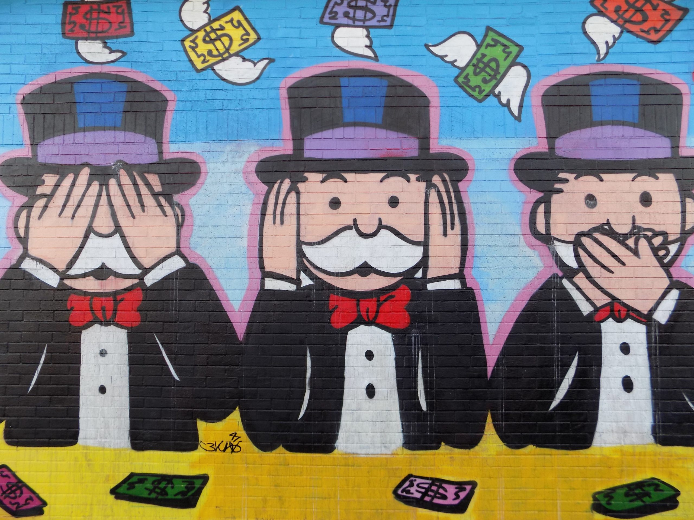

Quite a cool mural that popped up when I searched Google Images for 'neoliberalism'.In his powerful critique of Neo-liberalism, Nicholas Gruen draws heavily on the work of Michael Polanyi. The following essay is an attempt to carry on and fill out Polanyi’s work.
Like many liberal economists of the mid-twentieth century, but more deeply and comprehensively than others such as Hayek, Polanyi was aware of the importance to humanity and to liberal culture more specifically of the pursuit of cognitive, aesthetic and moral excellence and was aware of their dependence on a liberal culture. However, he was forced to recognise that the pursuit of economic efficiency is not conducive to cultural excellence.
Most cultural goods cannot be judged by their price in the market, and the most important are public goods for which users need not pay. The great competitor for the market is the state, which is able to finance many public goods, ranging from military power to education in virtue of its power of taxation. Many liberals were opposed to public support for cultural goods as dangerous to liberty and equality, but relied on the assumption that a few measures such as copyright could supply creative people with adequate support.
The first part of the following essay argues for a more realistic view of the cost of cultural as well as other public goods. This is important if we are to understand what sort of ways might be in accordance with the needs of a rich liberal society. If we are to live in a way that preserves our ecosystem, we will have to concentrate on finding a focus for our lives through participation in cultural rather than material goods. This, I argue, will require organisation.
So the second part of the essay suggest that there are ways in which many valuable but costly and public goods might be produced by organisations that are independent of the state but responsible both to those most active in the field and to those most affected by it.
Goods and Costs
The old adage that the best things in life are free is ambiguous. It is often taken to mean simply that they cannot be bought, which is true enough. But it is substantially false if it is taken to mean that they do not have costs, notably time and space, expenditure of effort, interaction with others, and generally excluding selfish alternatives to sustain satisfying relations with other people or with nature.
In any culture, there is an orthodoxy of public opinion that is based on experience of the value of certain goods and the costs of producing those goods. In liberal cultures, it is generally believed that the costs of many public goods do have a price in indirect ways, most obviously in time. This price leads to a market in public goods wherever the good in question is valued not for its own sake, but only for some sort of use that it has.
Obviously most of us most of the time value items of scientific knowledge not out of a desire to understand the world, but to use its capacity to produce the technology that saves us so much labour in the pursuit of what we value. The side effect of the market in paying others to find the bits and pieces of such goods as knowledge and aesthetic experience is that these crucial goods for our self-understanding and aspiration are to a greater or less degree misconstrued and misvalued.
Aesthetic items tend to be reduced to entertainment, fashion and advertising. Politics is reduced to maximising market values at the expense of moral considerations and aspirations, and cognitive values are reduced to what can be economically exploited.
People are well aware of these consequences and react in a variety of ways, ranging from Marx’s reduction of capitalism to genteel deploring of the pursuit of money and the commercialisation of the activities that enhance us. The great danger in these reactions is that they seize on political power as the obvious way of countering the power of money. The public goods that the market cannot produce must be produced by effective social organisation.
It used to be the consensus that salutary politics must be guided by religion, which alone inspires aspirations to higher values, and punitive sanctions which alone ensure that evil is suppressed. This social theory was exemplified by the nation-state with its land, culture and centralised power to preserve its population against internal and external violence. Liberal democracy criticised both the pretensions of religion and the power of the state relying on the market to supply consumer goods and popular opinion to control organised violence. This control was exercised by national legal systems that were as diverse as the national cultures that provided the powerful beliefs and practices of each nation and the normative practices of each community. But the rationality of law could conflict with various aspects and objectives of many cultural communities.
Conflicts arise between democracy and cosmopolitan law in a variety of forms. The goods that concern cultural communities relate to the public goods that are important to them as part of their identities and welfare. By contrast, the abstract universal rights and goods that are the concern of high-level concentration on equality as the key to what is important to human identity and welfare are often seen not only as remote but as suppressing diversity and the will of particular peoples.
On the one hand the great problems of the modern world, climate and nuclear and technical warfare, overpopulation, the international monetary system and world health, all pose themselves on a global scale and seem to demand action by effective supernatural authority. On the other hand, such authority involves an uncontrollable, remote authority that at best endorses, at worst destroys local authority. As long as we think that effective authority must be modelled on the nation-state this conflict is inevitable and insoluble.
My contention is that different goals and problems require intervention in various networks of social activity, not a uniform centralised pattern imposed by a single source of authority. The model of a sound political system is that of an ecosystem institutionalised in a variety of forms in a process of adaptation to each other, involving a degree of autonomy at every level. This sort of order cannot be planned from above as the traditional model of sovereign power assumes. It rejects the concepts of equality that sanction uniformity and replace them with opportunity to identify dangerous concentrations and counter that of power and constrain individuals in their various interdependencies. I try to give some suggestions regarding how such bodies might work in the following section.
Demarchy 2020
Demarchy is not a comprehensive plan for reshaping existing public institutions in the ordinary course of social change. Most institutions change sometimes for good reasons and sometimes for worse.
All states are pressed towards privatising public institutions because the electorate demands more from them, but is also clamouring for relief from taxation. Privatised institutions are often capable of good performance in the short run but fall into inadequacy as they pay more and more attention to profits, try to rid themselves of obligations and resist the attempts of politicians and activists to penalise them for causes that have popular appeal.
The demarchal remedy for this problem is to make these institutions subject to rigorous but impartial audition and review. That move should be initiated in most cases by specific forums in each case that identifies the procedures and objectives in existing institutions and invites proposals to remedy them.
I would suggest that in each case these proposals should be assessed and authorised by citizen juries comprising the main groups with positive or negative interests in the results of what the particular proposal is likely to affect substantially. Once such an institution is chosen it would be required to submit a professional auditor, that would assess the efficiency of the institution in bringing about the improvements it proposed. The audit would be examined by a citizen jury like that which authorised the privatised institution.
In the beginning such privatisation would need the support of an existing state and probably in a very small scale such as a local train network. However, to the extent that it was successful it would be attractive to cashstrapped governments and to people who want to have an active representation on the choices these bodies make. At the other end of the spectrum lies Google, which makes available an extraordinary range of public goods to people all over the world, while making very large profits from advertising and from selling information. State powers have little capacity to regulate Google but there is considerable fear in many circles that Google may grow increasingly authoritarian and rapacious. It would be in Google’s interest to publish audited accounts of what it is doing and have its choices open to scrutiny by impartial juries.
Similar considerations apply to firms like banks, insurance companies and any body that depends on its reputation for quality of service. Particularly in the USA, people often think that democracy and its competitors are to be judged by the degree of independence that people have from dependence on each other and the power of individuals to choose whatever they desire. In a modern science-based highly technical form of life, such visions are dangerous because they are not guided by available knowledge.
It is very important that people face objectively the consequences of the real circumstances in which we find ourselves. We are often in the position of having to depend on scientists to tell us what we must do in some important matter even when we do not want to hear it. Much of the scientific knowledge available to us poses problems that have no reliable answer. So very often we cannot know what is the best course of action. More fundamentally, we differ about what is worth trying, or what is a good way to explore and test competing problems. I would argue that the ecosystem model of society can help us here.
Faced with the complexities of various systems, all that nature can do is look to limited adaptations as each element of the system reacts to the others. In nature each acts blindly. We can act with design. But it is all a gamble. We must be well organised but also flexible enough to act successfully in such a disorganised context.
What would remain of states as we know them if as much as possible of the provision of public goods was handed over to demarchic bodies? I think that two basic functions would remain: criminal law definition and enforcement, and the collection of funds to be distributed to institutions that could not raise enough money to meet their needs and to individuals to cover their basic needs. On the last point, my view is that all land and natural resources should be entrusted progressively to the human population and leased to individuals and organisations. This would provide two kinds of role: the provision of various public funds to cover a minimum income to all and the needs of public institutions. These bodies would be bound to preserve the system, not exploit it. They would be relatively small, though often international, particularly where consumption of resources is involved.
We might start by using trustees for some specific factors in fuels and other contributions to global warming and pollution. Such bodies must be very narrowly defined and have advantages of some sort for most of the users of the resource in question. They will fail if they are seen as a program for universal justice rather than as a particular agreement that solves a few problems in a pragmatic way.
There are already many bodies of limited scope that regulate most entitlements in travel, trade and the allocation of radio waves. These are mostly not adequately audited but rely on the professional integrity of their offices. It would be useful to subject them to juries of a demarchic sort, avoiding the threat of the UN bureaucracy and over-reliance on experts.
I was reading this book by Nathan Schneider on cooperatives and it has the story – of a referendum initiative in Colorado in 2016 (It was unsuccessful) Residents voted against ColoradoCare – it being opposed by both Democrats and Republicans, but it's interesting because it was separated from central (State) government. The levies it would have compulsorily levied would fund Colorado's health system which would be governed as a cooperative of those paying for it – the constituents – not the State Government. You can read Nathan's piece on it here.
Sounds like a very interesting idea. One could imagine doing this with various services.